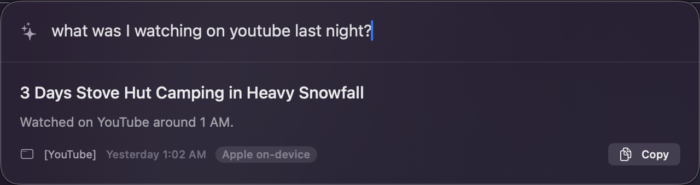
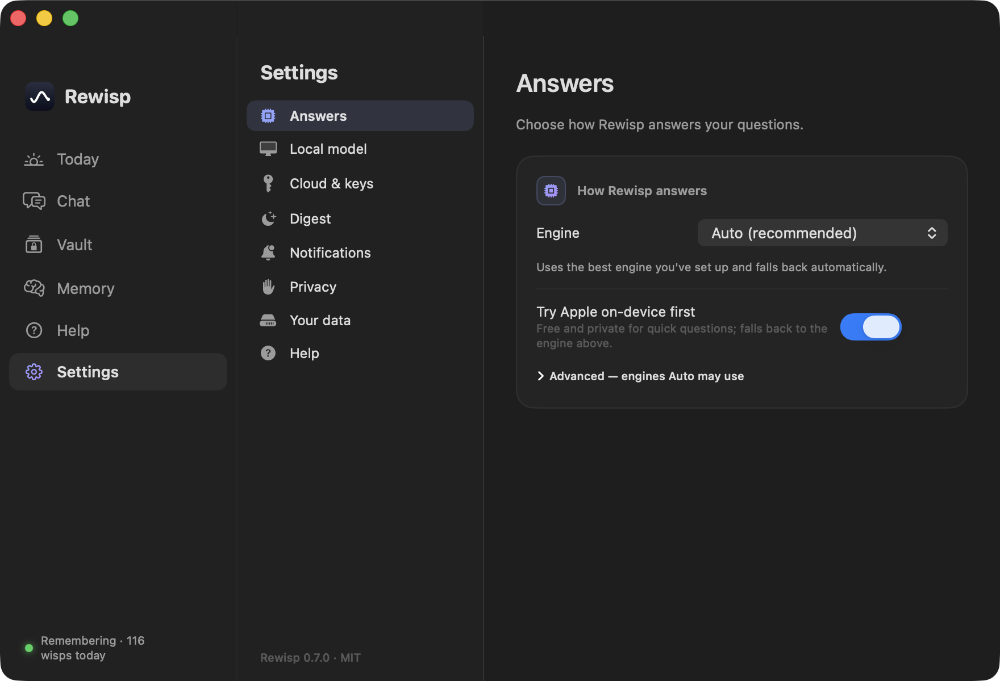

Every glimpse of your screen becomes a wisp — text only, kept on this Mac. Ask anything later and Rewisp revisits them for you. Now it reasons over them too: what changed, what you promised, what you keep forgetting.
macOS 15+ · Apple Silicon · summon anywhere with ⌘⇧Space
No screenshots below — these are live, running in your browser. The real app does the same on your Mac.
⌘⇧Space on a signup page. Reads every field, fills from your saved details. Never passwords or cards — and never submits.
Free on-device model answers first. If it comes up thin, Rewisp quietly escalates to Gemini, then Claude — you just see the good answer.
At 9 PM: what happened, what's still open, what it learned about you. Every fact waits for your approval before it's kept.
Minutes per app, computed locally from what you actually looked at. No timers to start, nothing sent anywhere.
Rewisp keeps clean text, not video — so it can do things a screen recorder can't. All of this runs on your Mac, for free.
Ask “that article about burnout” and it finds the page that said “exhaustion.” No shared words needed — it understands what you meant.
Rewisp keeps every version of a page. Ask what’s new since Tuesday and it shows exactly what was added, changed, or removed.
“I’ll send it Friday” — caught where you write, never typed. Confirm it and Rewisp reminds you on the due day, once, until it’s done. Ads and AI chats can’t fake one.
A weight, a grade, a price you see again and again becomes a sparkline. “How has my weight moved?” — charted from your own screen.
Open the panel and the suggested questions are read off what’s already on your screen and what you’ve asked before.
Your failed searches teach it your personal forgetting curve. Things you saw once get rescued right before they fade; facts you keep looking up get pinned forever.
Nights fold old wisps into tidy episodes; the things you ask about get stronger. And it can nudge you when today echoes something you saw before.
Actual screenshots — the whole thing runs today.

Hit ⌘⇧Space, ask anything. Answered on-device in seconds, in plain English — synthesized from everything you saw.

A real app behind it. Pick your engine chain, schedule the digest, manage the Vault. No API key, ever.
Most "memory" apps record your screen to the cloud. Rewisp was built the opposite way — the pixels are gone before anything is saved.
Smart triggers — switching apps, opening a page, settling after a scroll — catch a wisp of the moment. No constant recording.
Apple's Vision framework turns each wisp into text on-device. The screenshot is never saved — only what it said.
Hit ⌘⇧Space and ask in plain English. Full-text search finds the moment; a model writes the answer with source and time.
Reads every field on a signup or checkout page, pulls your details from the Vault, fills them in. Never passwords or cards, and never submits — you review and send.
Apple on-device, a bundled local model, Gemini, Claude, or ChatGPT. Set an order — it falls through to the next whenever one comes up short.
At 9 PM, one summary of your day: what happened, what's unfinished, what it learned about you — every fact needs your approval.
Drop in your resume, addresses, standard answers. Locked behind your fingerprint, treated as trusted truth, filled back to you instantly.
On first launch it checks your Mac and offers a local model that fits — unlimited, offline, private. Or skip it and stay fully on-device.
See where the day actually went — minutes per app, computed locally from what you looked at. No timers, no upload.
A plain markdown file of what it knows. Approve, edit, or delete any line. It never confirms anything on its own.
SwiftUI menu bar app, global hotkeys, a Spotlight-style panel that fades in and grows with the answer. No Electron.
Connect Claude Desktop, Claude Code, Cursor, or any MCP client — they can search your screen history and read your promises while they work. Read-only, fully local, never spends your subscriptions.
Updates arrive through GitHub Releases — the app checks daily and offers them with one click.
Free and open source · MIT · ⌘⇧Space to summon